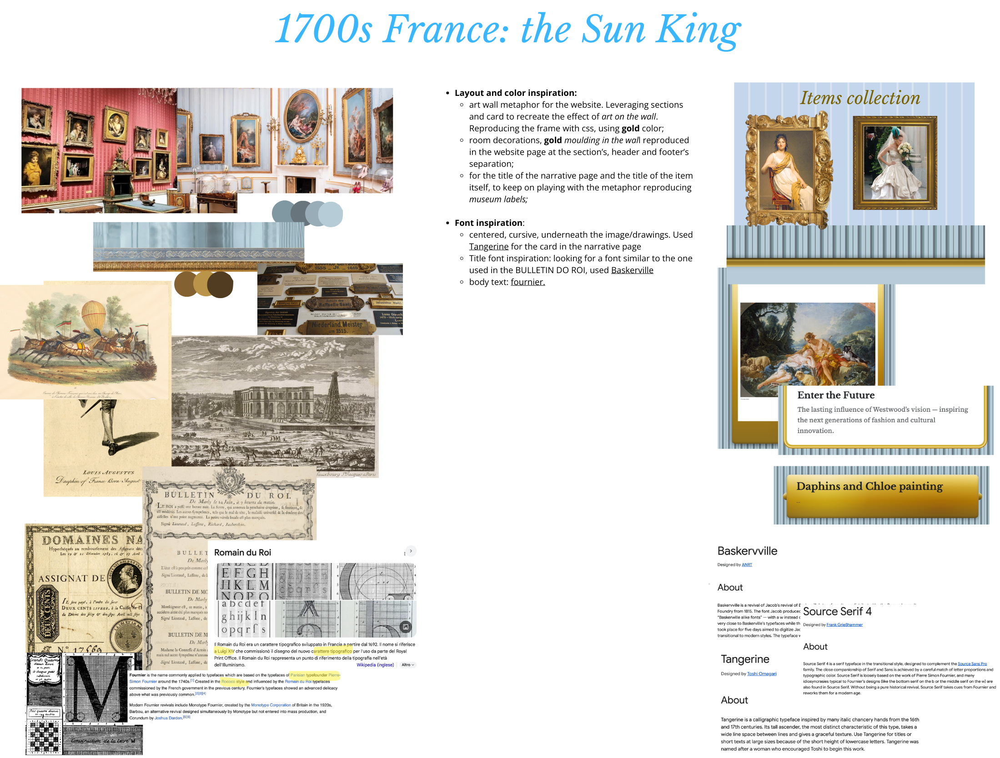
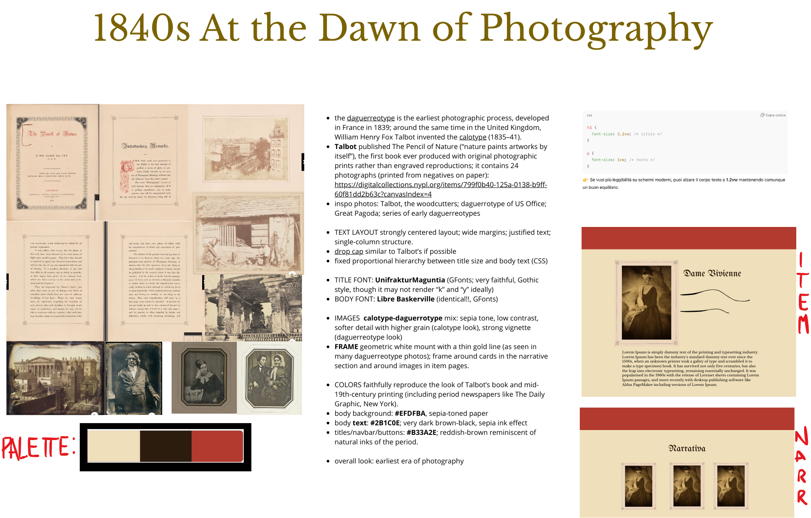
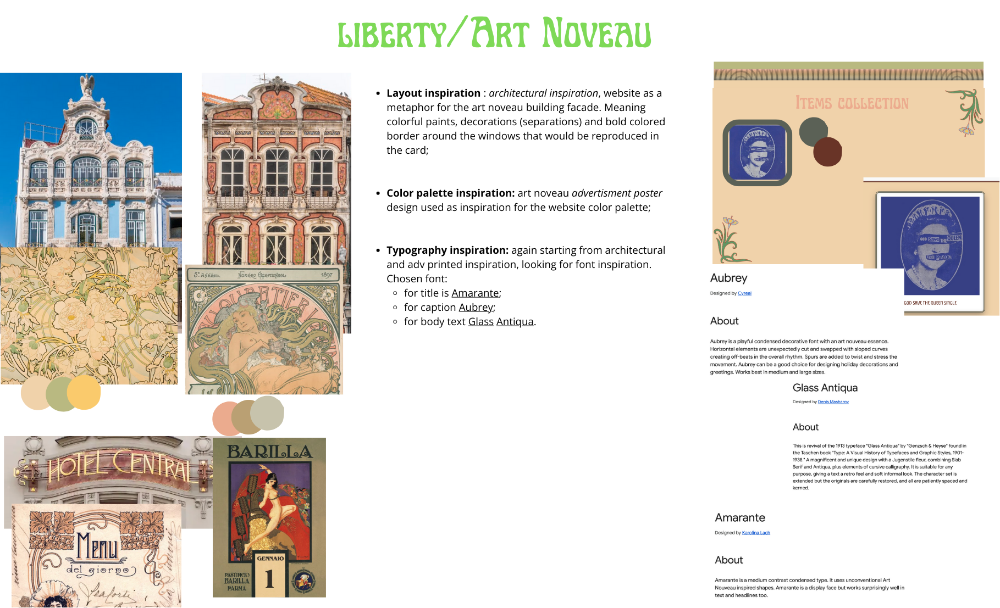
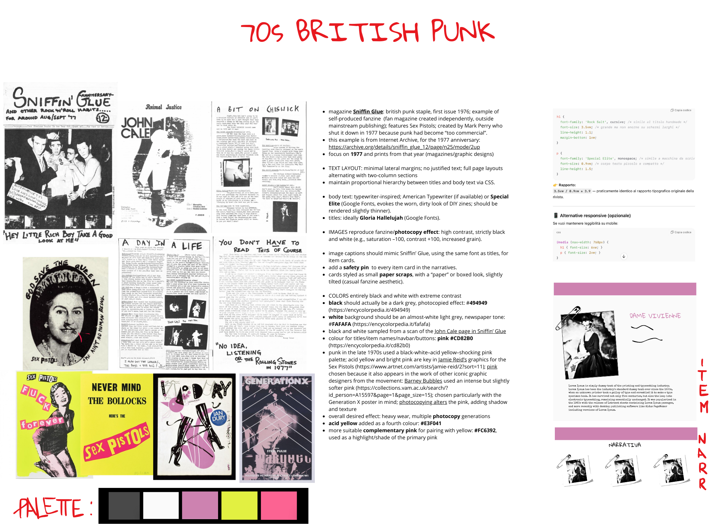
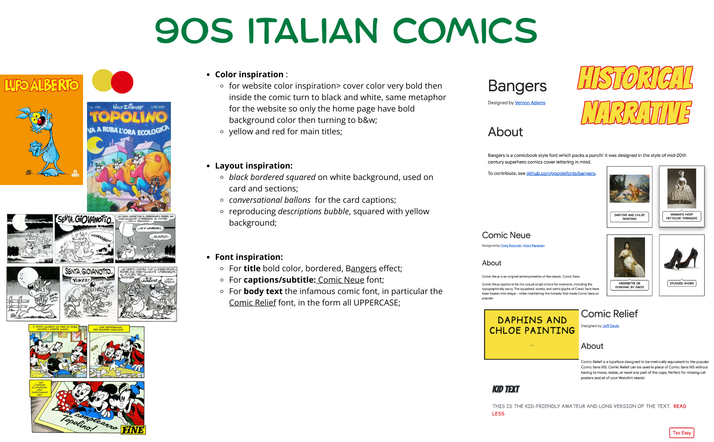
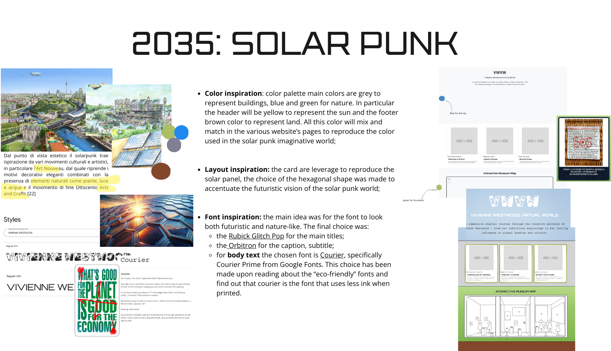

Documentation
Project structure, stylistic choices, and technical implementation details.
The (virtual) museum content
The first step of the project ideation has been the item's research and selection: starting from the item chosen for the knowledge organization project called "Lod save the queen", we focused on three type of items related to Vivienne Westwood world: punk heritage from the 70s, XVIII century France inspiration and Nana, the manga and anime inheritance. Moving from these three main narrative each of us select 7 items related to the chosen thematic areas. The 21 selected item would make up the whole museum and potentially would be organized in three separate rooms. Ideally a in-person visitor would visit the museum by browsing each room and grasping the variety of Vivienne's art.

From the item selection we moved onto the project/museum name brainstorming. Inspired by the MMMM title and concept from the course project specification we came up with Vivienne Westwood Virtual World to play onto the acronym VWVW and the concept of a virtual museum experience.
The virtual museum form
We started working at the same time at the logo design and web-based narrative design.
The final svg logo form has been inspired by various museum's logo, by the project specification's logo and by the Vivienne Westwood brand logo.
The result is a in-line reflected logo that report the acronym of the museum and a smaller version for the website favicon.
The design of the web-based narratives was curated at the same time. The idea is that the visitor could benefit from a virtual enhanced experience. What the website does is offering three alternative narratives for browsing the collection crossing the room. This experience could be had on-line but also in person following the map that pin-point the route between items.
Has required by the project specification one of the web-based narrative is an historical one, "Chronicles of Fashion". After collecting the original date of the art work we create the first "lists of item". The user can follow this narrative to visit the museum virtually or not in a chronological order.
The second web-based narrative "Made by Vivienne", allow the user to browse the museum by exploring the item Vivienne Westwood designed. This narrative allows for a quicker and more fashion-oriented visits of the museum collection.
Last but not least "Enter the future", this narratives allows the user to browse across the collection to explore the items that inspired Vivienne’s work and the work that she has inspired.
The museum website layout
Moving from the website requirements stated in the course's project specification, we started sketching possible layout for the three main pages of the website: homepage, narrative page, item page.
We started with a simple wireframing.

The museum website implementation
Having the wireframes in mind we then moved onto the actual website implementation. Each of us took care of one of the webpage and started leveraging bootstrap classes in order to create a basic website layout to help us start visualizing the final website.
At the same time each of use started working on the web page loading logic, using data organized in the json file and populate the webpage via javascript.
It was crucial to also design a visual tool to navigate the collection and allow the user to orient themselves in the museum too. We create an svg map representing the frontal view of the museum and skecth the item's physical form and the implement it a way to navigate the collection by clicking on the item and visualizing the narrative's route
Styles inspirations
The project specifications required six different style sheets to be applied to the whole web project based on historic period. From the general time-period requirment we moved on to more peculiar artistic inspiration. In particular the following are the moodboard that explains the themes inspirations and design.
Each of team member curated two of the themes css.






Code revision and cleanup
Took care of the restructuring of the code, both css and javascript.
Multimedia, metadata and text production
In the website, given the small collection, we wanted to implement a related-media section that allow the user to explore further the collection and also the curatiorial choices made by the team's members. In the multimedia shelf the user can browse related video, images and article.
Disclaimer
Legal notes and educational purpose statement.
The purpose of this web site is to explore various types of typographic and
layout style for musem pages, as an end-of-course project for the "Information
Modeling and Web technologies" course of the Master Degree in Digital Humanities
and Digital Knowledge of the University of Bologna, under prof. Fabio Vitali.
The documents contained in this web site have been selected for their length and
complexity from XXX. Their publication here is not intended to be an alternative or
replace their original locations:
- File 1: http://aouhadosuvosh
- File 2: http://alekfpahvaoeh
- etc.
All copyrights and related rights on the content remain with their original owners.
All copyright on the typographic and layout choices are 2025 © XY
The Team
The students behind the Vivienne Westwood Virtual World.